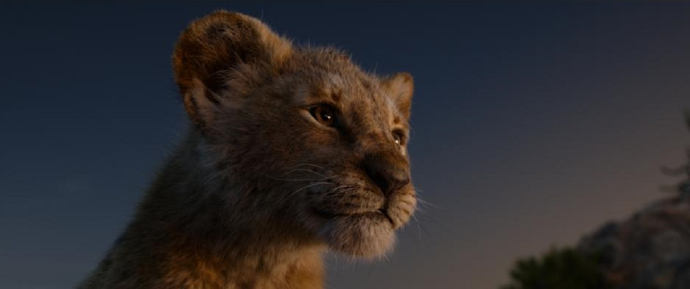

LION KING
Release date: 26 Apr 2019 (United States)
Directors: Joe Russo · Anthony Russo
Languages: English · Japanese · Xhosa · German
Summary: 2019 · 3hr 1min
Adventure/Action
Costume designer: Judianna Makovsky
Music by: Alan Silvestri
SUMMARY
It may be a long time before viewers can appreciate the 2019 remake of "The Lion King" as a freestanding work, instead of judging it against the original. The 1994 version was "Hamlet" plus "Bambi" on the African veldt: a childhood-shaping, Oscar-winning blockbuster, the second-highest grossing feature film of its calendar year, one of the last great hand-drawn Disney animated features (Pixar's original "Toy Story" came out 18 months later), and a tear-producing machine. This remake was controversial long before it opened, mainly because it seemed to take the Walt Disney company's new branding strategy—remaking beloved animated films as CGI-dependent "live action" spectaculars—to its most drastic conclusion. It serves up the same story with different actors, different arrangements of beloved songs and soundtrack cues, a couple of original tunes, a few fresh scenes and sequences, and, of course, photorealistic animals. The latter are the movie's main selling point, so believable that one of my kids remarked afterward that sitting through the film was like watching a nature documentary on mute while the soundtrack to original "The Lion King" played in the background.But here's the thing: the movie is helmed by a Disney veteran, actor-director Jon Favreau, who's great at this kind of thing. And this might be his best-directed film, if you judge purely in terms of how the scenes and sequences have been framed, lit, and cut together. The cinematographer is Caleb Deschanel, who shot some of the greatest live-action animal adventures in movie history, including "The Black Stallion," and this production straightforwardly owns the notion of "realness," modeling its animals on actual creatures, defining character more through body type and ingenious details of movement than through facial expressions, which might've looked kinda creepy here, honestly. (The animals are a little bit creepy at times, though not as creepy as in Andy Serkis' "Mowgli," where you sometimes felt as if you were watching top secret footage of gene-spliced animal-humans.) Favreau broke into filmmaking with such hip indie comedies as "Swingers" and "Made," then improbably transformed himself into a junior version of Steven Spielberg or James Cameron, overseeing the biggest of big-budget properties, including the first two "Iron Man" films and Disney's recent hyper-real remake of "The Jungle Book." This may be his most daunting challenge yet, or at least his most provocative if you cherish the source material. The very idea of presuming to remake Disney's most financially successful late-period animated film with the latest in computer-generated imagery, while continually reminding people of the original by recycling the same story and music (and many of the same iconic shots and locations, including the lions' distinctively shaped Pride Rock), is as close as Hollywood gets to courting charges of blasphemy. visuallity, the original was 88 minutes' worth of stylized paintings in motion, like a child's storybook come to life, but with expressionistic or psychedelic elements (like the freaky green highlights in the "Be Prepared" sequence, and the stylized hellfire and skewed camera angles during the end battle) that tickled the sensibilities of film-buff parents. In contrast, this new "Lion King" is rooted deeply in the real, from its plain, sometimes drab colors to the animals' intricately rendered bone structures, muscles, and fur. Even when the characters are singing the familiar songs and repeating the familiar lines (or, in one hilarious and oddly postmodern interlude, quoting another Disney movie) the entire crew is working double-overtime to convince you that these creatures exist, that they shed fur and drop scat on the jungle floor.